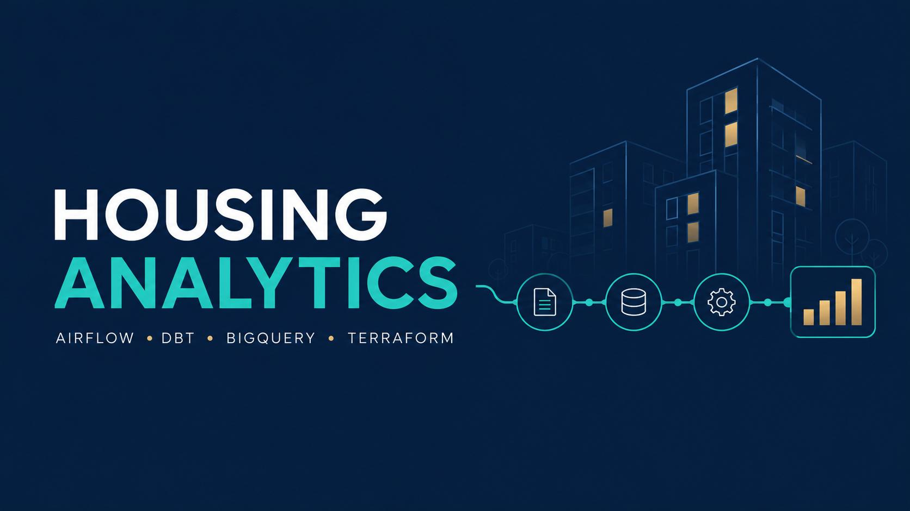

Housing availability analytics
I turned four student-housing source files into tested BigQuery models and a dashboard for capacity and assignment reporting.
- Built
- Airflow ingestion, dbt transformations, Terraform infrastructure, and a Looker Studio report.
- Checks
- 13 DAG tasks, 10 models, 61 tests, and 4 reporting marts.